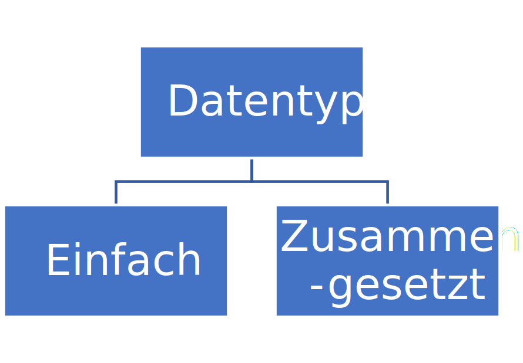
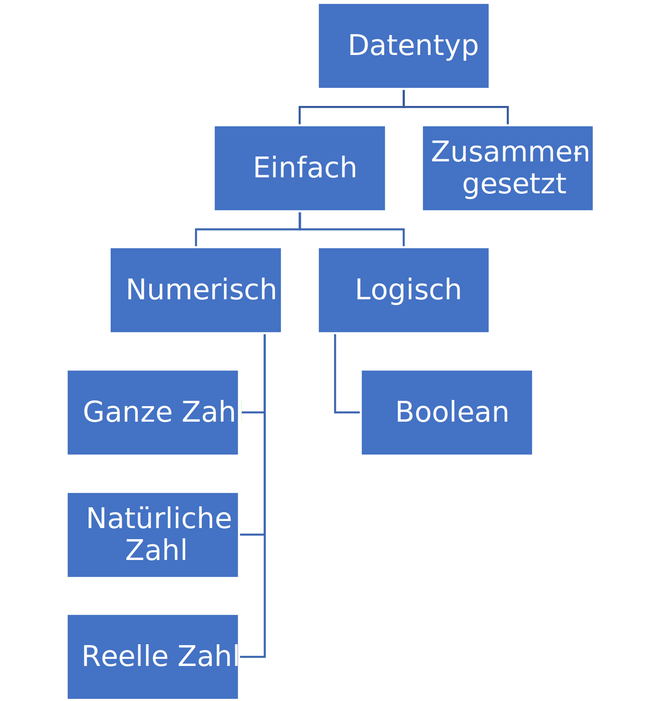
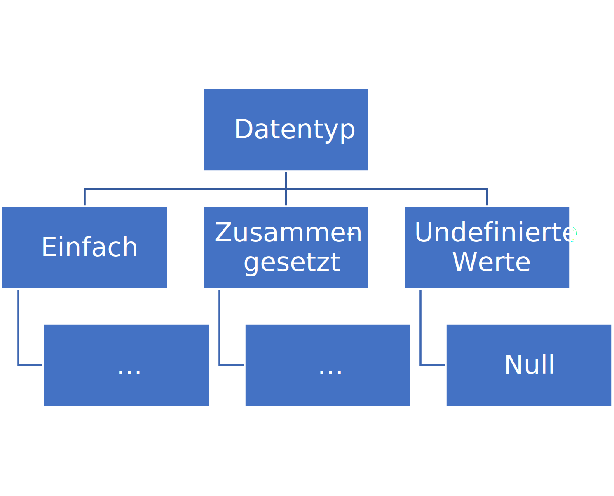

Data types#
The definition of ‘insanity’ in programming is doing the same thing over and over again and expecting different data types
— Linus Torvalds
Slides/PDF#
Variables in Python#
Most programming languages use variables to store values. A variable is, in this context, a binding of a value to a name. Internally, this name then points to the memory address in the program’s RAM where the value is stored. This allows you to work with the variable’s name in your code without needing to worry about the exact memory address.
In programming, a variable is a value that occurs during the execution of a computer program and is usually changeable. A variable is normally referred to in source code by a name, has a data type, and an address in the computer's memory.
Besides variables there are also constants. In most compiled programming languages there is a special syntax to define constants, since these are embedded directly in the program code and not in the program’s memory.
A constant is a value that cannot be changed once it has been assigned.
In Python there are no special constants, but it is common to write variables that are intended to be used as constants in uppercase, to distinguish them from ordinary variables. Both constants and variables have a data type that indicates what kind of value they can store.
The data type of a variable determines the kind of value stored in the variable and which operations can be performed on it. E.g., whether it is a number, text, or a list.
The data type of a variable is determined automatically in Python when the value is assigned. Therefore Python is also called a dynamically typed language. That means that we do not have to specify the data type of a variable in advance; it is dynamically determined by assigning a value to the variable. In other programming languages, the data type of a variable is often required to be explicitly declared before the value is assigned. These are also called statically typed languages. They are regarded as safer and less error-prone, since the data type of a variable is checked at compile time.
An assignment is performed by the ‘=’ operator, on whose left-hand side the variable name always stands and on the right-hand side the value to be assigned. In Python, variables can have arbitrary names, as long as they conform to the rules for identifiers. An identifier may contain only letters, digits, and underscores, may not begin with a digit, and may not use any reserved keywords of the programming language.
number = 1 # variable name = value
The value of a variable can be displayed with print(variable_name).
print(number)
1
In a notebook like this, the last line of code in a code block is automatically wrapped in a print() call. So we can also write
# number
Basically, when naming variables you should ensure that they are meaningful and describe the content of the variable. This makes the code easier to understand and the program easier to maintain. There are a few rules:
Use names that clearly convey the meaning and content of the variable.
Avoid overly generic names like ‘data’ or ‘v’.
Keep the naming conventions in your code consistent.
Use lowercase letters with underscores (_) to separate words (snake_case), e.g.,
meine_variable.Avoid special characters such as ä, ö, ü, ß since these can cause problems in character encoding.
Do not use reserved keywords of the programming language as variable names (e.g.,
if,for,while).Avoid abbreviations or acronyms unless they are generally understandable (e.g., “GDP”).
Strive for a balance between clarity and brevity.
Here are some examples of good and bad variable names:
Good |
Bad |
Description |
|---|---|---|
age |
a |
Clearly denotes a person’s age. |
first_name |
fn |
Clearly describes the first name. |
birth_year |
by |
Unambiguous and understandable for the birth year. |
email_address |
Makes it clear that it’s an email address. |
|
is_on |
on |
|
product_list |
products |
Makes it clear that it’s a list. |
score_total |
score |
Indicates that this is the total score. |
user_count |
count |
Indicates that this is the number of users. |
Data types#
There are various data types that can be used in Python and in programming languages in general. We distinguish between simple and composite data types. Simple data types (primitive data types) can only hold a single value from the corresponding range of values. Composite data types (complex data types) are a data construct that consists of simpler data types. Because they can theoretically become arbitrarily complex, they are often counted among data structures.
{width=250px}
The data type of a variable is determined with type(variable_name) and printed with print(type(variable_name)).
print(type(number)) # In a program you use the print() function to produce output
<class 'int'>
Since Python is a dynamically typed language, we can simply change a variable’s data type by assigning it a new value.
number = 2 # the variable number now has value 2, which is still numeric
print("Wert: ", number, "\nDatentyp: ", type(number))
Wert: 2
Datentyp: <class 'int'>
number = "text" # text is not a numeric value but a text string
print("Wert: ", number, "\nDatentyp: ", type(number))
Wert: text
Datentyp: <class 'str'>
Numeric data types#
Numeric data types are data types used to represent and process numbers. They form the basis for mathematical computations in programming languages. Numeric data types include integers (Integer), floating-point numbers (Float), and complex numbers.
Integers (Integer): They represent numbers without decimal places, both positive and negative values. In many programming languages there are different variants that differ by their storage capacity, such as Short, Int, or Long.
Floating-point numbers (Float): These data types are used to represent numbers with decimal places. They allow the representation of fractions and very large or very small numbers through scientific notation.
The exact naming and size of numeric data types can vary depending on the programming language. In Python, numeric values are automatically assigned to the appropriate type, without the programmer having to specify the size or sign explicitly.
 {width=500px}
{width=500px}
Python internally distinguishes only between int (integer) and float (floating-point number). There are no special data types for Short, Long, or Double as in other programming languages. The advantage of Python as a dynamically typed language is that Python internally selects the appropriate representation. So you can, for example, store very large integer values without any problems, which in most statically typed languages could not be processed because the number is too large. This is especially helpful for calculations with very large numbers (such as multiplication), since overflows cannot occur if the results exceed the representable range.
number = 3.14 # the variable number now has the value 3.14, which is a floating-point number
print("Wert: ", number, "\nDatentyp: ", type(number))
Wert: 3.14
Datentyp: <class 'float'>
number = 1232321361278362746384633213232142142131231312323123212132313231332132312 # The variable number now has a very long integer value
print("Wert: ", number, "\nDatentyp: ", type(number))
Wert: 1232321361278362746384633213232142142131231312323123212132313231332132312
Datentyp: <class 'int'>
Boolean Data Types#
In all programming languages there are boolean data types to express truth values and to perform logical operations.
{width=450px}
In Python there is the data type bool and the truth values True and False for true and false. Note the capitalization of the initial letter, as this can vary greatly between programming languages.
true_or_false = True
print("Wert: ", true_or_false, "\nDatentyp: ", type(true_or_false))
Wert: True
Datentyp: <class 'bool'>
The variable richtigoderfalsch has the data type bool.
For example, using all-uppercase or all-lowercase for the truth value True is not allowed.
true_or_false = TRUE
---------------------------------------------------------------------------
NameError Traceback (most recent call last)
Cell In[10], line 1
----> 1 true_or_false = TRUE
NameError: name 'TRUE' is not defined
If an error occurs, the code isn’t executed, so the value of the variable doesn’t change.
print(true_or_false)
True
Textual Data Types#
Textual data types are used to represent letters and character sequences. A single character is referred to as a Char, while a sequence of several characters is referred to as a String. Strings can also be regarded as composite data types, since they consist of multiple characters.
 {width=450px}
{width=450px}
Python does not distinguish between chars and strings. For both, there is the data type str. A string is a sequence of characters of any length. Strings in Python are enclosed in quotation marks, either in single (') or in double (") quotation marks.
character = 'a'
print("Wert: ", character, "\nDatentyp: ", type(character))
Wert: a
Datentyp: <class 'str'>
string = 'hallo welt'
print("Wert: ", string, "\nDatentyp: ", type(string))
Wert: hallo welt
Datentyp: <class 'str'>
Python does not distinguish between these data types and uses the str type for both.
In Python, a character is simply a str of length 1. We determine the length with the len() function.
print(len(characters))
---------------------------------------------------------------------------
NameError Traceback (most recent call last)
Cell In[14], line 1
----> 1 print(len(characters))
NameError: name 'characters' is not defined
print(len(string))
10
In Python, a string in code can be written using either single ' or double " quotation marks. Depending on which quotation mark you use, the string must be terminated with the same quotation mark. This has the advantage that nested quotes do not need to be escaped.
string = "hallo 'welt'"
print("Wert: ", string, "\nDatentyp: ", type(string))
Wert: hallo 'welt'
Datentyp: <class 'str'>
If encoding (escaping) is necessary, it is done in Python with \. That is how the alternative notation goes.
text = 'hallo \'welt\''
print("Wert: ", text, "\nDatentyp: ", type(text))
Wert: hallo 'welt'
Datentyp: <class 'str'>
Python also has some particularly simple syntactic sugar. For example, you can easily create formatted strings by prefixing the string with an f. In the string you can then directly embed variable values using {variable_name}, which are then substituted into the string before output.
string_value = f"der wert von nummer ist '{number}'"
print("Wert: ", string_value, "\nDatentyp: ", type(string_value))
Wert: der wert von nummer ist '1232321361278362746384633213232142142131231312323123212132313231332132312'
Datentyp: <class 'str'>
Binary Data Types#
In a computer, all data are stored in binary, as a sequence of 0s and 1s. For this, there are specific binary data types in programming languages that allow representing data in this form without converting them to other formats (e.g., text, numbers, bool). Binary data types can represent arbitrary characters. They are commonly used to store complex files such as images, videos, or CAD files.
Since they are essentially just a string of characters, they can also be interpreted as a string. Therefore you can create them in Python by prefixing a string with a b. This creates a binary string (also a bytearray), whose data type in Python is bytes.
word = b"byte"
print("Wert: ", word, "\nDatentyp: ", type(word))
Wert: b'byte'
Datentyp: <class 'bytes'>
The value of a single byte in the bytearray is typically an integer from 0 to 255. In Python, an int is used for this. This can be demonstrated by indexing into the bytearray to access a single byte.
print("Wert: ", word[0], "\nDatentyp: ", type(word[0]))
Wert: 98
Datentyp: <class 'int'>
Sequences#
Sequences are an ordered collection of values. In programming languages, sequences are usually called Arrays. Arrays often have a fixed, immutable length and contain values of a single data type that is defined at creation. The values inside the array, however, are mutable.
Lists are another common data type for sequences. Lists often have no fixed length and can be extended arbitrarily.
 {width=450px}
{width=450px}
Python does not support the data type Array, but only lists (list) and tuples (tuple). Both can contain different data types. The list type is declared with square brackets, with the individual values separated by commas. These values can have different data types.
list = [1, 2, 3, "a", True]
print("Wert: ", list, "\nDatentyp: ", type(list))
Wert: [1, 2, 3, 'a', True]
Datentyp: <class 'list'>
Individual values in a list can be overwritten. To do this, you can access individual indices in the list.
my_list[1] = "anders"
print("Wert: ", my_list)
---------------------------------------------------------------------------
NameError Traceback (most recent call last)
Cell In[22], line 1
----> 1 my_list[1] = "anders"
2 print("Wert: ", my_list)
NameError: name 'my_list' is not defined
Lists can be modified and thereby change their length (which is why they are not arrays). To append a new value to the list, the list’s append() function can be used.
my_list.append(False)
print("Wert: ", my_list)
---------------------------------------------------------------------------
NameError Traceback (most recent call last)
Cell In[23], line 1
----> 1 my_list.append(False)
2 print("Wert: ", my_list)
NameError: name 'my_list' is not defined
The length of the list can be determined with the len() function.
print(len(my_list))
---------------------------------------------------------------------------
NameError Traceback (most recent call last)
Cell In[24], line 1
----> 1 print(len(my_list))
NameError: name 'my_list' is not defined
In Python, tuples have a fixed length compared to lists. Since they can contain different data types, they are not arrays either.
tuple = (1,2,3,"a", True)
print("Wert: ", tuple, "\nDatentyp: ", type(tuple))
Wert: (1, 2, 3, 'a', True)
Datentyp: <class 'tuple'>
The tuple is immutable (immutable), unlike lists.
tuple[0] = True
print(tuple)
---------------------------------------------------------------------------
TypeError Traceback (most recent call last)
Cell In[26], line 1
----> 1 tuple[0] = True
2 print(tuple)
TypeError: 'tuple' object does not support item assignment
Additionally, there is the special data type range to generate a sequence of integers. It is generated by the range function.
number_sequence = range(1,10)
print("Wert: ", number_sequence, "\nDatentyp: ", type(number_sequence))
Wert: range(1, 10)
Datentyp: <class 'range'>
To access an element, its index is written in square brackets. In Python, the index in a list starts at 0 (starting at 1 in some programming languages).
print( my_list[0] ) # prints the first element
print( my_list[1] ) # prints the second element
---------------------------------------------------------------------------
NameError Traceback (most recent call last)
Cell In[28], line 1
----> 1 print( my_list[0] ) # prints the first element
2 print( my_list[1] ) # prints the second element
NameError: name 'my_list' is not defined
A peculiarity of Python is that negative indices are also allowed to access the end of lists (this is called syntax sugar among programmers).
print( list[-1] ) # prints the last element
print( list[len(list)-1] ) # would be the usual cumbersome way to output the last element using the length len(list)
True
True
In Python, you can also access parts of lists using slicing. You can use this to create sublists.
print(my_list[0:10]) # accesses the first ten elements (excluding 10)
print(my_list[:10]) # also accesses the first ten elements (excluding 10)
print(my_list[-10:]) # accesses the last ten elements
---------------------------------------------------------------------------
NameError Traceback (most recent call last)
Cell In[30], line 1
----> 1 print(my_list[0:10]) # accesses the first ten elements (excluding 10)
2 print(my_list[:10]) # also accesses the first ten elements (excluding 10)
3 print(my_list[-10:]) # accesses the last ten elements
NameError: name 'my_list' is not defined
Sets#
Sets represent a collection of values without duplicates, just like in mathematics.
 {width=450px}
{width=450px}
The data type for sets in Python is called set. They are declared using curly braces.
set = {1, 2, 3}
print(set)
print(type(set))
{1, 2, 3}
<class 'set'>
Sets are a good way to find all unique values in a list that contains duplicates, such as a list of names.
list_with_repetition = list([1,2,2,2,2,2,3])
unique_set = set(list_with_repetition)
print("Wert: ", unique_set, "\nDatentyp: ", type(unique_set))
---------------------------------------------------------------------------
TypeError Traceback (most recent call last)
Cell In[32], line 1
----> 1 list_with_repetition = list([1,2,2,2,2,2,3])
2 unique_set = set(list_with_repetition)
3 print("Wert: ", unique_set, "\nDatentyp: ", type(unique_set))
TypeError: 'list' object is not callable
Another important application of sets is to check whether an element is in the set. This can be done with the keyword in.
1 in quantity
---------------------------------------------------------------------------
NameError Traceback (most recent call last)
Cell In[33], line 1
----> 1 1 in quantity
NameError: name 'quantity' is not defined
That works the same for the list, but it’s slower, especially when the list is very large (length over 1000).
1 in list_with_repetition
---------------------------------------------------------------------------
NameError Traceback (most recent call last)
Cell In[34], line 1
----> 1 1 in list_with_repetition
NameError: name 'list_with_repetition' is not defined
Dictionaries#
Dictionaries are used in many programming languages to manage key-value pairs, such as the properties of a data object and their values.
Mathematically, dictionaries represent a mapping from a set of keys to a set of values (Key-Value). The set of keys must not contain duplicates; the set of values may contain duplicates.
{width=450px}
Dictionaries are called maps in most programming languages (from the English term ‘mapping’). In Python they are called dict. They are defined using curly braces and key/value pairs.
house = {
"Gebäudetyp": "Wohnhaus",
"Baujahr": 2022
}
print("Wert: ", house, "\nDatentyp: ", type(house))
Wert: {'Gebäudetyp': 'Wohnhaus', 'Baujahr': 2022}
Datentyp: <class 'dict'>
New values can be added to dictionaries by assigning a value to a key.
house['Material'] = "Stein"
print("Wert: ", house, "\nDatentyp: ", type(house))
Wert: {'Gebäudetyp': 'Wohnhaus', 'Baujahr': 2022, 'Material': 'Stein'}
Datentyp: <class 'dict'>
You can also test whether an element is in the dict here.
'Material' in house
True
Values can also be deleted from the index using the del keyword.
del house['Material']
print("Wert: ", house, "\nDatentyp: ", type(house))
Wert: {'Gebäudetyp': 'Wohnhaus', 'Baujahr': 2022}
Datentyp: <class 'dict'>
Null Values#
In many programming languages there is also a value to represent a missing value, e.g. when something isn’t there.
{width=450px}
In Python, the null value is called None, and its data type is NoneType.
no_value_yet = None
print("Wert: ", no_value_yet, "\nDatentyp: ", type(no_value_yet))
Wert: None
Datentyp: <class 'NoneType'>
The None value is often used, for example, to indicate that a variable exists but has not yet been assigned a value.
The null value is controversial in computer science because it can lead to errors when programming languages use it very often (as Java does). Some modern programming languages have therefore done away with it.
The problem is that you can’t distinguish whether something is None — undefined — or None — defined as null.
This also happens in Python. The get() function of a dict returns, for example, the value for a key in the dictionary and None when this key is not present.
print(house.get('schluessel_fehlt'))
None
However, you can also assign None to a value in a dictionary.
house['ist_none'] = None
print(house.get('ist_none'))
None
In both cases, the get() function returns None, and you can no longer directly tell whether the value is not present or is set to None.
Modifiability (Mutability)#
Generally, programming languages distinguish between mutable and immutable data types.
Modifiability describes the mutability of data structures.
If a data type is mutable, variables of this type can be modified directly.
If it is immutable, you can only change them through a complete reassignment.
To prevent programming errors and ensure data security (privacy), some programming languages distinguish very strictly between mutable and immutable data types.
Mutable (changeable) |
Immutable (unchangeable) |
|---|---|
|
|
|
|
|
|
|
|